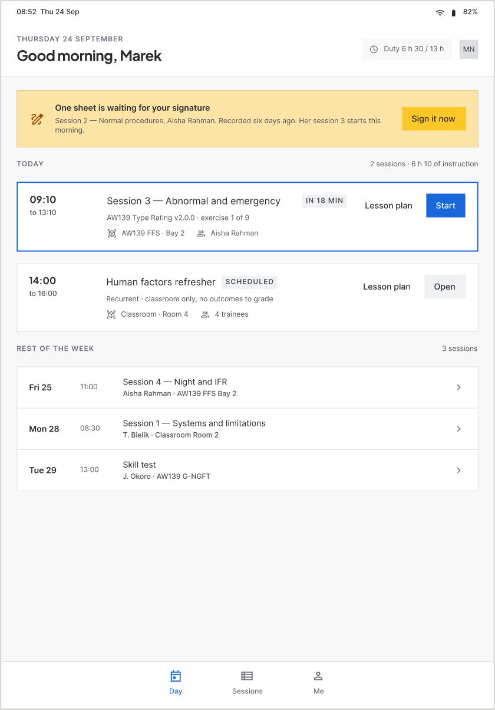
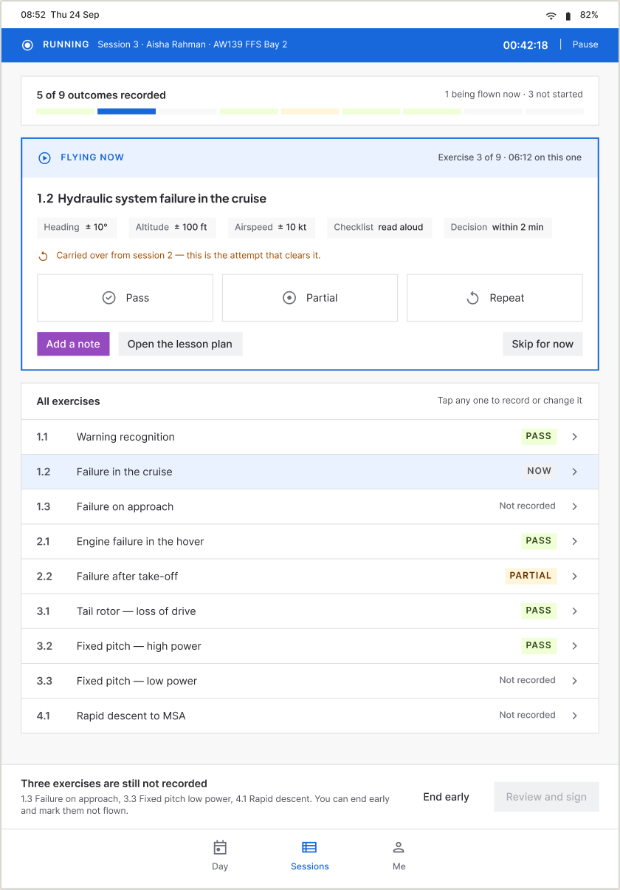
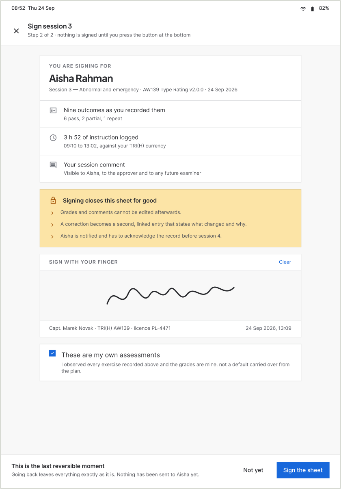
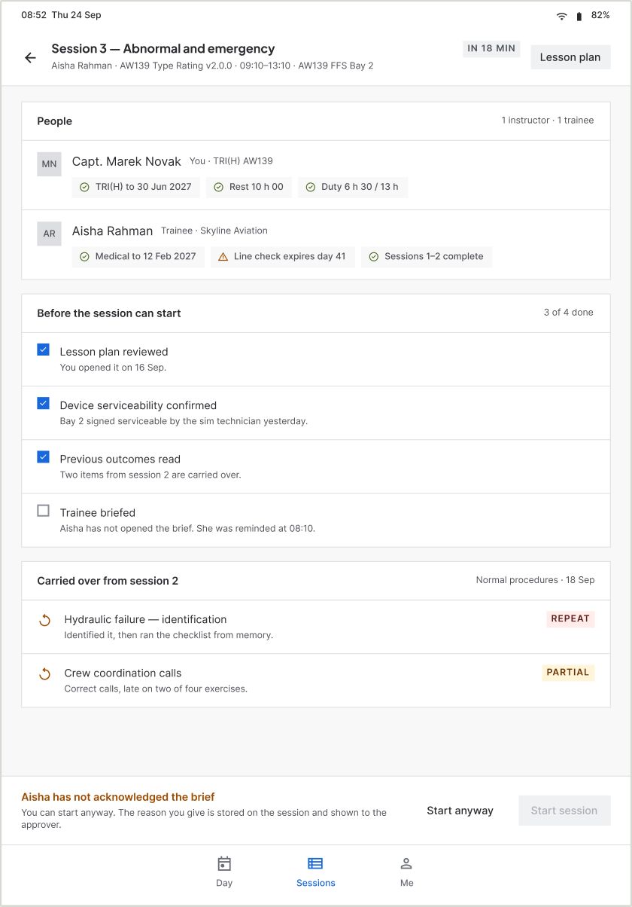
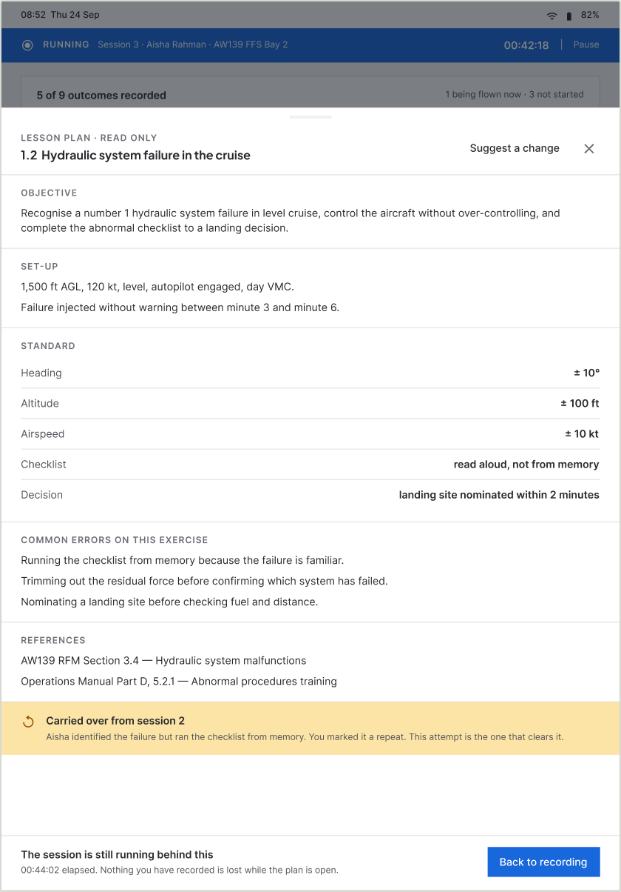
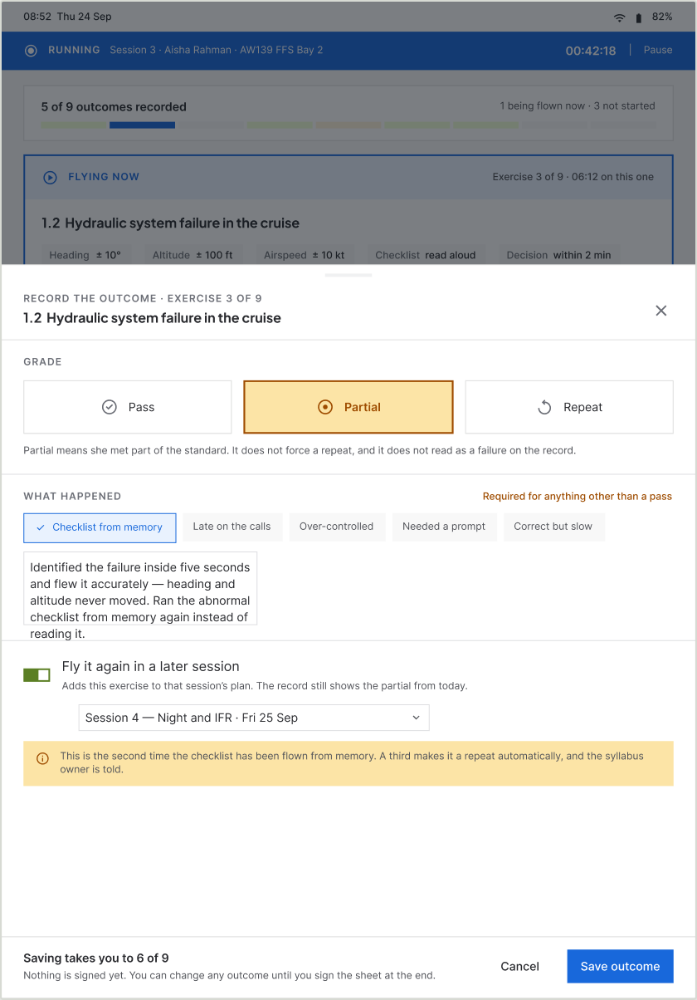
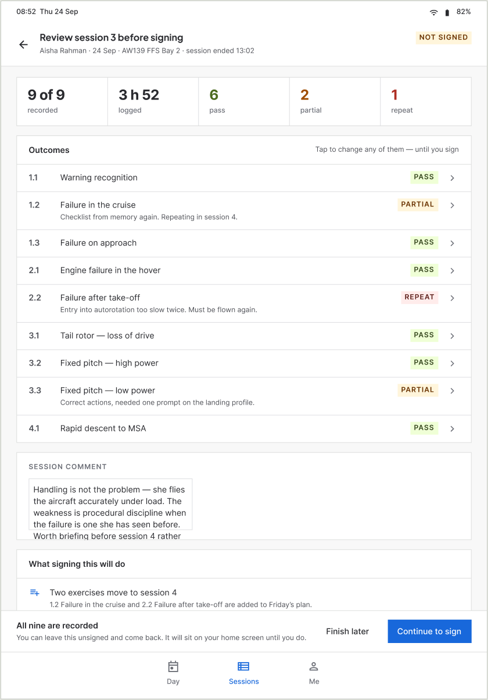

Field tablet app · Training · Release two
Helicopter instructors used to grade on a printed sheet while flying, then type it all again at a desk. Release one killed the desk pass and cut write-up from 30–40 minutes to a logged 10–12. This release killed the paper: a tablet app that is the training module and nothing else, used in the aircraft while the session is still running. Six instructors are flying with it. Not one of them is still writing in the margin.



01The win
0
sheets of paper in the cockpit
The behaviour the original research found — gone, by the instructors’ own account.
6 of 6
instructors flying with it
Every instructor on the trial. Including the two who asked why we were changing anything.
1
pass over the record, not two
The write-up no longer exists as a separate task. It finishes when the session does.
30–40 → 10–12
minutes, release one
Reported, then logged. Release two removes the remaining pass entirely.
7
screens, zero product chrome
No top bar, no side nav, no module switcher. The app is the module.
2
new components
Grade button and tab bar item. Nothing else forked for touch.
02The problem
A record written twice, the first time badly
The original research watched recordings of real training sessions. In every one, the instructor had a printed question sheet and was writing remarks in the margin — while flying, and while teaching. The spreadsheet came later, at a desk, from those notes.
“During flight our attention is divided between the trainee and the writing.”
Release one replaced the spreadsheet with a structured record inside the operations system and cut the write-up to a logged 10–12 minutes. Real progress, and only half the job — because the margin notes were still being made in the air. Two months in, the instructors said so themselves: “we still have to do it on paper and then on the web.” That sentence is the brief for this release.
03The reframe
Release one made the record findable. This one makes it recordable.
As long as the record is made at a desk an hour after the flight, it is a recollection typed up neatly. Move the moment into the session and it becomes an observation. Same fields, same data model, same validity written back to the crew roster — but what goes into them is no longer filtered through memory and a note in a margin.
That reframe decides the entire app. It is why there is no product navigation — the instructor is not visiting a system, they are inside one task. It is why every secondary surface is a sheet over a running session rather than a screen you navigate to. It is why signing is the only screen with no tab bar. And it is why the app is portrait: it is held, not propped.
04The design
Seven screens, and no way out of them
The instructor’s whole day. Navigation is three tabs at the bottom, back inside a session, and sheets that open over the running session rather than replacing it.
-
01
My day
A day, not a dashboard. Two sessions, a duty figure, and the one thing that needs the instructor: an unsigned sheet from six days ago, sitting above everything because the trainee it belongs to is flying this morning.
-
02
Session, before it starts
People, readiness, and what was carried over from last time. Start is disabled and the bar beneath names the reason — the trainee has not read the brief. Start anyway sits next to it, because nobody argues with software in a sim bay. The reason is stored on the session.

-
03
Running the session
The screen the release exists for. A pinned strip keeps the session and its timer present whatever else is open. Nine segments show recorded, flying now, not started. The exercise being flown is a card of its own with three 64px grades and the tolerances beside them; every other exercise is one tap below.
-
04
Lesson plan, over the session
On desktop the plan is a screen you navigate to. Here it is a sheet over a running session, with the elapsed time on the footer. An instructor cannot edit an approved syllabus mid-flight — they file a suggestion against the exercise, with the session attached.

-
05
Grading an exercise
The sheet the finger actually touches. Anything other than Pass asks for a note and offers quick phrases drawn from what instructors really write. A repeat names the session it moves to. And the screen volunteers what the instructor may not recall: this is the second time the checklist has been flown from memory.

-
06
End of session, review
Five counts, nine outcomes, the comment, and a card stating what signing will do — two exercises move to Friday, one carried item clears, nothing reaches the roster until the skill test. Everything is still editable here, and the screen says so.

-
07
Sign
The only screen with no tab bar, because it is not a place to browse from. What is being attested, what signing closes for good, a signature pad, and a confirmation that the grades are the instructor’s own. The footer reads “this is the last reversible moment”.
05What changed
Release one against release two
Same data model, same records, same roster write-back. What moved is where and when the record is made.
| Release one · web | Release two · tablet | |
|---|---|---|
| Where the record is made | At a desk, after the flight, from margin notes | In the aircraft, while the session runs |
| Passes over the record | Two — paper, then the web form | One |
| Paper | Still used in the air | Stopped |
| What an outcome is | A recollection, typed up neatly | An observation, recorded where it happened |
| Navigation | OPS top bar, side nav, module switcher | None. Three tabs and the session you are in. |
| The plan | A screen you navigate to | A sheet over a running session |
| Grading | Five status cells in a table row | Three 64px buttons with conditional follow-up |
06System work
Two components, and a rule about not forking
The company’s design system already existed. Seven touch screens produced two new components; everything else is the existing library at its existing sizes.
6 variants
Grade button
Pass, Partial and Repeat, selected and unselected, at a 64px target with the grade colour built in. Button and Choice chip are both pointer-sized and neither carries grade semantics.
2 variants + text property
Tab bar item
A vertical touch target with no chrome around it. Top nav item and Side nav item are horizontal desktop patterns.
The temptation on a touch release is to build a parallel set of larger variants and call it a tablet kit. It is faster for one release and it splits the system for every release after.
07What instructors say
Including the two who did not want it
“It is awesome — now they can enter the data and fill up the forms during the flight.”
The paper stopped
Not reduced — stopped. This is the one outcome in the document that is a behaviour rather than an opinion, and it is the exact finding the original research produced two releases ago.
The sceptics came round
Two instructors pushed back on the whole idea and asked why anything was changing. Both now say they would not go back, and the reason they give is that it is less hassle. Nobody persuaded them; using it did.
Nobody asked for the web version back
Six instructors, both operators, and no request to return to filling the form at a desk. On a trial where the old system is still running in parallel, that is a choice being made every day.
The research behind this release is the research behind release one: eight instructors and seven trainees interviewed, recordings of real sessions, and a requirements pass by the business analysis team at each client. This release did not need new research — it answers a finding that was already two months old and had been restated as a complaint.
08How we are proving it
Four measures and eight test cases
The paper stopping is a behaviour, and behaviours are the strongest evidence a trial produces. It is not a number. Release one is instrumented; this one goes into instrumentation before the evaluation window closes, and these are the measures and the tests it will be judged on.
| Measure | What it tells us | Target |
|---|---|---|
| Time to first outcome | How far into a session the first grade is recorded. If the record is genuinely being made live, this is minutes, not hours. | Inside the first exercise |
| Share recorded in-session | Outcomes timestamped before the session ends, against those added after. | Above 90% |
| Session end to signature | Release one’s equivalent was 10–12 minutes of write-up. Here the sheet should already be complete. | Same duty period, no write-up gap |
| Corrections per 100 outcomes | A record made from memory should need more correcting than one made live. This is the accuracy claim, and the only one that can be falsified. | Lower than release one’s rate |
Eight test cases
T1
Record a pass one-handed while reading a checklist aloud
Graded in under 10 seconds without looking away twice
T2
Grade a partial with a note and a repeat target
Completed without leaving the running session
T3
Open the lesson plan mid-session, then return
The instructor notices the session is still running
T4
End a session with three exercises ungraded
The instructor finds all three from the refusal message alone
T5
Reach the sign screen with the wrong trainee selected
Caught before the signature, from the attestation card
T6
Undo a mis-tapped grade
Currently undesigned. This test is expected to fail and to produce a screen.
T7
First session for an instructor who has never seen it
Reaches first outcome recorded with no help
T8
Record three outcomes with no signal, then reconnect
Currently undesigned. Offline is the next thing to build.
Two of the eight are written to fail. A mis-tap under turbulence and an outcome recorded with no signal are the two states a friendly daylight trial will not find on its own, and they are what the next release is for.
09Reflection
What I would do differently
Building the web module first was the right call and I would make it again — it proved the record structure and taught six instructors the vocabulary before anything went near a cockpit. What I would change is shipping release one tablet-responsive from day one. The same screens, usable in the hand, on a rougher tool. The paper could have stopped two months earlier.
The second thing is smaller and more useful: decide what a release has to prove before designing it, not after it ships. Release one is instrumented because the write-up time was obvious to measure. Release two changes more and had no equivalent designed in from the start — which is why section 08 exists, and why it is a plan rather than a chart.
10The full set
Seven screens
iPad Air portrait. No product navigation anywhere in the set. The web module that preceded it has its own case study.
-
01 My day
-
02 Session, before start
-
03 Running the session
-
04 Lesson plan
-
05 Grading an exercise
-
06 End of session, review
-
07 Sign